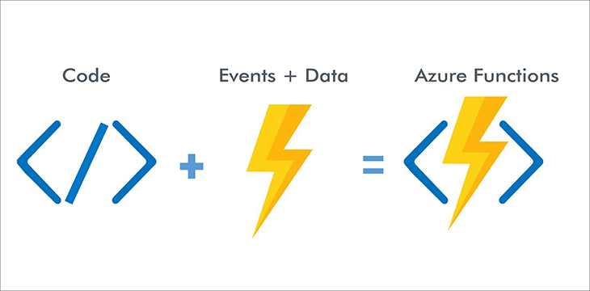
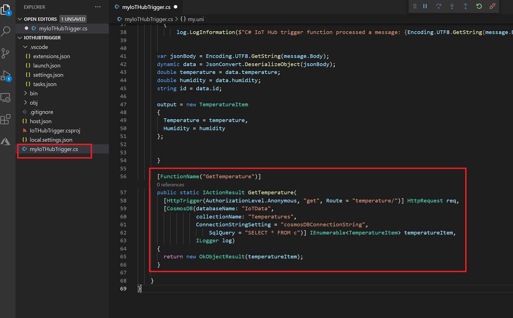
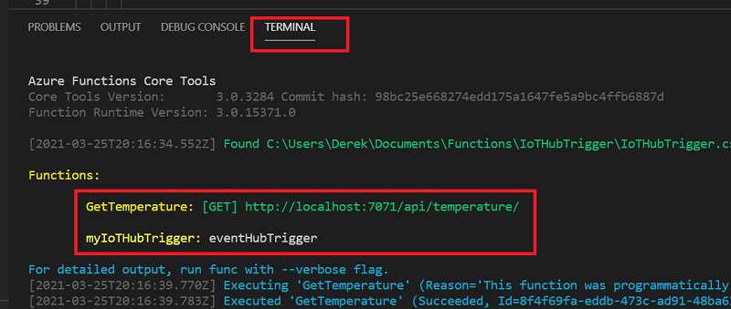
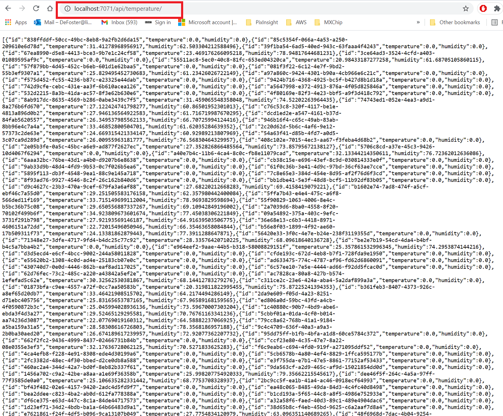
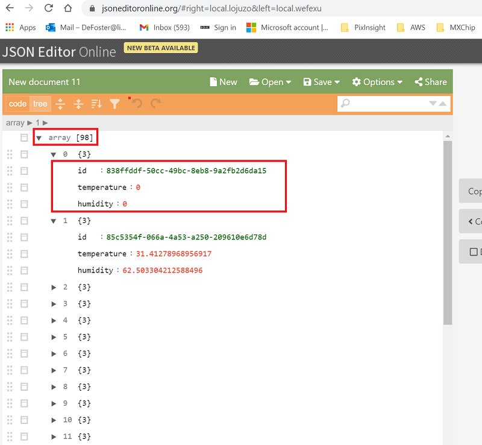

In this week's workshop you will add to the function app you created last week. As a reminder, last week in workshop 5 you created a Cosmos DB database and a serverless function of the type IoT Hub Trigger. Remember, the IoT Hub trigger function will triggered to run anytime a message (data from the simulated devices app) was sent to your IoT Hub. Further to this, the IoT Hub trigger function then took the sensor data and stored it in your Cosmos DB database.
This week you are going to add anew HTTPTrigger function inside the function app you created in workshop 5 for the purpose of exposing the save sensor data in your CosmosDB. This will be done using a simple REST endpoint that is part of your HTTPTrigger function, with the sensor data returned as JSON.
The workshop has a short guided component with the remainder of the workshop being available to catch up on previous tasks or attempt the independent tasks.
Open up the IoTHubTrigger function app you created in workshop 5 in VSC. You may need to locate the folder on your computer where you stored it, or it may open automatically. Next open the myIoTHubTrigger.cs file and add the below using directives to the top of the file:
using Microsoft.Azure.WebJobs.Extensions.Http;
using Microsoft.AspNetCore.Mvc;
using Microsoft.AspNetCore.Http;
using System.Collections.Generic;
Next you are going to add in a new function called GetTemperature whose sole purpose is to connect to your ComsosDB whenever it is triggered and return all of the stored sensor data. The HttpTrigger attribute on the HttpRequest tells the functions runtime that this function should be triggered by an HTTP request. This request allows anonymous authorization, meaning anyone can call it. Security is outside the scope of this workshop, but you can read more on securing Azure Function apps in the docs. This trigger only responds to GET requests, and is accessed by calling https://<your URL>/api/temperature/, and this is defined in the Route parameter. You can also see in the code we are using the connection details for your CosmosDB, if your database or collection (container) name is different then please edit accordingly:
[FunctionName("GetTemperature")]
public static IActionResult GetTemperature(
[HttpTrigger(AuthorizationLevel.Anonymous, "get", Route = "temperature/")] HttpRequest req,
[CosmosDB(databaseName: "IoTData",
collectionName: "Temperatures",
ConnectionStringSetting = "cosmosDBConnectionString",
SqlQuery = "SELECT * FROM c")] IEnumerable temperatureItem,
ILogger log)
{
return new OkObjectResult(temperatureItem);
}
This CosmosDB binding will return all documents inside the Cosmos DB collection,, essentially binding it to the REST resource from the URL. For example, if you issue a GET request to https://localhost/api/temperature/, (when the function is running) it will extract all documents from the collection as a JSON object.
For placement of the GetTemperature function code please see below:

Save and run the function app (hit F5) and you will see that you now have two functions running inside your function app, your new function for a GET request called GetTemperture, and your function from workshop 5 called my myIoTHubTrigger:

Cope and paste your GetTemperature function URL (as higlighted in above screenshot) and it should return all of the sensor data in your CosmosDB database, for id, temperature, and humidity values (remember your function url may not be the same as presented here):

The above data item from Cosmos is already formatted as a JSON array, you can view this easier by using the online JSON viewer here by pasting it as below:

In terms of serverless functions, you should now have an IoTHubTrigger function (from workshop 5) and an HTTPtrigger function (from this workshop) in the same function app. Please keep these code resources and do not delete them as you will need them for future workshops as well as your assessment work.
i) Explore how you can filter the data returned by changing the SQL query so either only temperature or humidity data is returned. Remember - this is not standard SQL and you will need to follow CosmosDB rules here.
ii) You can create routes in HTTP trigger functions that can accept parameters. Modify the HTTP trigger code so that its route can accept two date parameters (start and end) that will return only sensor data between the range. To get started look at the ultimate reference guide here for functions! CosmosDB attaches a timestamp filed to every document, you will be able to use this but will need converting.